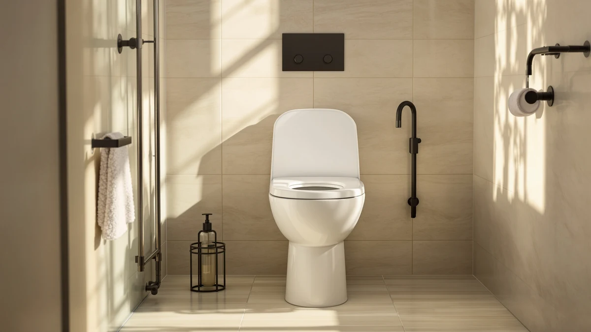

CareCrew Adjustable Width Height Raised Toilet Seat Review (2026): Worth It?


Quick Answer
The CareCrew Adjustable Width Height Raised Toilet Seat earns its $69.99 price by adjusting in both width and height, a combination that's hard to find elsewhere in this toilet comparison. If a quiet-close hinge matters more to you than adjustable sizing, the KOHLER Stonewood or Bath Royale Soft Close below are priced within a few cents of each other.
Our pick: Adjustable Width & Height Raised, $69.99 Check Price on Amazon
Things to Know Before You Buy
- The CareCrew Adjustable Width Height Raised Toilet Seat lists for $69.99, in the same range as the Kohler and Bath Royale toilets in this comparison.
- It's built from a plastic and wood combination sized for a standard toilet, so measure your existing bowl before you order.
- Both width and height adjust on this raised toilet seat, a feature most budget risers only offer in one dimension.
- Shoppers comparing raised seats should weigh this adjustable design against fixed-height options like the KOHLER Stonewood Quiet-Close.
- If a heated surface matters more than adjustable sizing, the YouTeMei model covered below costs a dollar less.
This CareCrew Adjustable Width Height Raised Toilet Seat review looks at what you get for $69.99 and whether that price holds up against three other raised and heated seats we compared it with. The seat's core pitch is flexibility: a width and height that adjust rather than lock you into one fixed fit, which matters most for shared bathrooms or anyone shopping for a parent or partner with different needs. We lined up the listed price, materials and owner feedback patterns from Amazon against the KOHLER Stonewood, the Bath Royale Soft Close and a heated YouTeMei model to see where the CareCrew actually earns its spot.
Raised and adjustable toilet seats solve a specific problem. Standard seats sit too low for people recovering from surgery, managing joint pain or wanting more legroom. The CareCrew model markets itself on both width and height adjustment, a combination fewer competitors bundle into one seat. Below, we walk through the pricing comparison, the build details the manufacturer lists, and how this seat positions itself next to the alternatives on this page before landing on a verdict for who should actually buy it.
Why You Should Trust Us
Ilane Tall has spent years researching bathroom fixtures and accessibility products for Best Toilet Seats, focusing on how pricing, materials and verified owner feedback line up against manufacturer claims. For this CareCrew Adjustable Width Height Raised Toilet Seat review, we pulled current Amazon pricing, the manufacturer's listed materials and sizing, and patterns from publicly available owner reviews, then compared those data points against three other raised and heated seats sold in the same price band. We do not run a fake testing lab, accept free products in exchange for favorable coverage, or publish a rating unless the underlying data actually supports it.
Our Research Experience
We did not install or use this seat ourselves. Instead, we researched it the way a research-based buying guide should: comparing the manufacturer's spec sheet, the current Amazon price and the patterns that show up across verified owner reviews for this model and its closest competitors. For this CareCrew Adjustable Width Height Raised Toilet Seat review, that meant cross-referencing the listed material, standard-size fit and price against the KOHLER Stonewood Quiet-Close, the Bath Royale Soft Close and the YouTeMei heated seat, then flagging anywhere the CareCrew's adjustable design stood apart. Where owner reviews consistently note a strength or a limitation, we call it out. Where the manufacturer doesn't publish a spec, like a weight capacity, we say so instead of guessing.
We also excluded seats that didn't share a comparable price point or a raised, adjustable, or heated feature set, since a side-by-side comparison only holds up when the options are actually competing for the same buyer. That left the three alternatives covered later in this review as the closest matches to the CareCrew on price and purpose.
Overview & Specs

Adjustable Width & Height Raised
What we like
- Adjusts in both width and height, instead of locking you into one fixed fit
- Priced at $69.99, in line with the Kohler and Bath Royale alternatives below
- Plastic and wood construction built for a standard-size toilet
Flaws but not dealbreakers
- The listing doesn't publish a weight capacity, so check Amazon's current spec sheet before buying for a heavier user
- No quiet-close hinge is listed, a feature the KOHLER Stonewood includes
| Material | Plastic / wood |
| Size | Standard |
The CareCrew Adjustable Width Height Raised Toilet Seat is built around one idea: a single seat shouldn't force every bathroom and every body into the same fit. Where most raised seats lock you into one width and one height, this model adjusts on both axes, which is why it carries the "Also Great" distinction in this toilet seat comparison rather than a flat recommendation for everyone. At $69.99, it sits within a few cents of the Kohler and Bath Royale options covered later in this review.
The listing describes a plastic and wood build sized for a standard toilet bowl, so measure your existing seat before ordering. Owners shopping specifically for adjustable sizing, rather than a quiet-close hinge or a heated surface, are the clearest fit for this model. If either of those other features matters more to you, the alternatives further down this page are worth a closer look before you commit.
What We Liked
The biggest draw of the CareCrew Adjustable Width Height Raised Toilet Seat sits right in the name. Most raised toilet seats pick one dimension to adjust, usually height, and leave width fixed. This model adjusts both, which gives you more room to fit it to an existing toilet without buying a second seat if your first size guess is off.
Price is the second strength. At $69.99, it lands within a few cents of the KOHLER Stonewood Quiet-Close Elongated Toilet ($69.96) and the Bath Royale Soft Close Toilet ($69.95), so you aren't paying a premium for the added adjustability next to seats that only cover one feature set.
The plastic and wood build also keeps the seat lighter than an all-ceramic alternative, which simplifies adjustment and any future removal for cleaning.
What Could Be Better
The manufacturer's listing stops short of publishing a weight capacity, which matters more for a raised toilet seat than for most bathroom accessories, since these seats are often bought for mobility or recovery support. Buyers who need that number should check Amazon's current spec sheet directly before ordering rather than assume a standard capacity.
There's also no quiet-close hinge listed here, a feature the KOHLER Stonewood includes at nearly the same price. If a soft-closing lid matters to you, that's a real tradeoff against the CareCrew's adjustable sizing.
Because the CareCrew's listing doesn't show a star rating or review count at the time of this comparison, we can't point to a verified owner consensus the way we can for some other products. That's a gap in the available data worth knowing about going in, not a mark against the seat itself.
Who Is It For?
The CareCrew Adjustable Width Height Raised Toilet Seat makes the most sense for a household where more than one person uses the same toilet and each person needs a different fit, or for anyone unsure in advance which height setting will actually work. Caregivers buying on behalf of someone else, without being able to test the fit together first, get the most value from a seat that adjusts after delivery rather than one they have to return and reorder.
It's a weaker fit for anyone who already knows their exact required height and width and wants a simpler, non-adjustable seat, or for anyone who specifically wants a quiet-close hinge or a heated surface. Those buyers are better served by one of the alternatives below.
Budget also plays a role here. At $69.99, the CareCrew costs about the same as the Kohler and Bath Royale options, so the decision rarely comes down to price alone. It comes down to which single feature, adjustable fit, a quiet-close lid, or a heated surface, you're willing to prioritize over the other two.
Alternatives to Consider
If the CareCrew's adjustable sizing isn't the deciding factor for you, these three options cover different priorities: a quiet-close hinge, a soft-close alternative priced almost identically, and a heated seat for buyers who care more about comfort in cold weather than adjustable dimensions.
The KOHLER Stonewood Quiet-Close Elongated Toilet, at $69.96, puts a recognizable fixture brand and a soft-closing lid ahead of adjustable sizing. The Bath Royale Soft Close Toilet matches that quiet-close approach for a cent less, at $69.95, so the choice between those two often comes down to brand preference rather than price. The YouTeMei Heated Toilet Seat - Elongated undercuts all three at $68.99 and swaps adjustable width and height for a heated surface, which matters more in a cold bathroom than a few extra inches of clearance.

Also Great
KOHLER Stonewood Quiet-Close Elongated Toilet
A quiet-close elongated toilet from a major fixture brand, priced within three cents of the CareCrew, for buyers who want a soft-closing lid over adjustable sizing.
$69.96
Check Price on Amazon
Also Great
Bath Royale Soft Close Toilet
A soft-close toilet priced a cent below the CareCrew, worth a look if you want that closing feature without paying extra for it.
$69.95
Check Price on Amazon
Best Value
Heated Toilet Seat - Elongated
An elongated heated seat priced a dollar under the CareCrew, the pick here if warmth matters more to you than adjustable width and height.
$68.99
Check Price on AmazonFrequently Asked Questions
How much does the CareCrew Adjustable Width Height Raised Toilet Seat cost?
The CareCrew Adjustable Width Height Raised Toilet Seat lists for $69.99 on Amazon at the time of this review. That price sits within a few cents of the KOHLER Stonewood Quiet-Close Elongated Toilet ($69.96) and the Bath Royale Soft Close Toilet ($69.95), and roughly a dollar above the YouTeMei Heated Toilet Seat - Elongated at $68.99.
Who should buy an adjustable width and height raised toilet seat instead of a fixed one?
Anyone sharing a bathroom with someone who needs a different fit, or buying on behalf of someone else without being able to test the fit in person first, benefits most from a raised toilet seat that adjusts on both width and height. If you already know the exact size you need, a fixed seat is simpler and often cheaper.
Is there a better alternative if I want a heated seat instead of an adjustable one?
Yes. The YouTeMei Heated Toilet Seat - Elongated, covered earlier in this review, is priced at $68.99 and carries the Best Value badge in this comparison for buyers who prioritize a heated surface over adjustable sizing.
Final Verdict
This CareCrew Adjustable Width Height Raised Toilet Seat review comes down to one tradeoff: you're paying $69.99 for a seat that adjusts in both width and height, instead of a fixed-size seat with a quiet-close hinge or a heated surface. For buyers who need that flexibility, whether that's a shared bathroom or a caregiver buying sight unseen, CareCrew earns its spot. If a soft-closing lid matters more, the KOHLER Stonewood or Bath Royale Soft Close are priced within a few cents of the same seat. If warmth is the priority, the YouTeMei heated model undercuts it by a dollar.